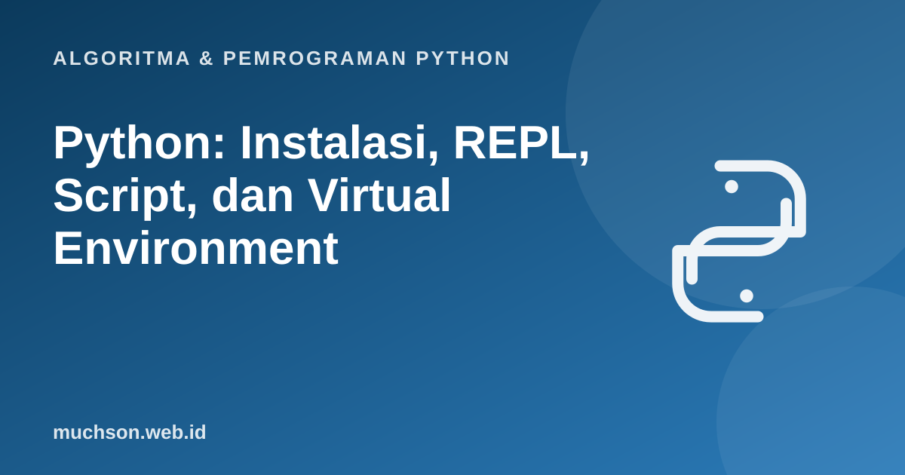

Beranda › Artikel › Algoritma & Pemrograman Python
Algoritma & Pemrograman PythonPython: Instalasi, REPL, Script, dan Virtual Environment
Hambatan pertama kebanyakan pemula bukan Python-nya, melainkan menyiapkan lingkungan kerja. Materi ini menjelaskan setiap bagian dengan jelas: apa itu interpreter, kapan memakai REPL dan kapan script, dan mengapa virtual environment penting sejak proyek pertama.

Setelah membaca dan mencoba materi ini, Anda mampu:
- memasang Python dan memeriksa versinya
- membedakan REPL dan script serta kapan memakai masing-masing
- membuat dan mengaktifkan virtual environment
- memasang paket dengan pip dan mencatat dependensi
Memasang Python
- Unduh dari situs resmi python.org sesuai sistem operasi Anda, atau pakai pengelola paket (Homebrew di macOS, apt di Linux, winget di Windows).
- Di Windows, centang Add python.exe to PATH saat pemasangan agar perintah
pythondikenali. - Buka terminal baru lalu periksa dengan perintah di bawah.
python --version
# contoh keluaran: Python 3.13.3
pip --versionGunakan Python 3. Python 2 sudah tidak didukung sejak 1 Januari 2020. Bila ada petunjuk lama yang memakai print "teks" tanpa kurung atau raw_input, itu Python 2.
REPL: berbincang langsung dengan Python
REPL (Read-Eval-Print Loop) membaca satu perintah, menjalankannya, mencetak hasilnya, lalu menunggu perintah berikutnya. Ketik python di terminal untuk memulai. Prompt >>> berarti Python siap menerima perintah. Keluar dengan exit().
>>> 2 + 3 * 4
14
>>> nama = "Dewi"
>>> "Halo, " + nama
'Halo, Dewi'
>>> len(nama)
4
>>> exit()REPL ideal untuk mencoba potongan kecil, memeriksa perilaku fungsi, dan belajar. Tetapi isinya hilang saat Anda keluar. Untuk program yang utuh, gunakan script.
Script: menyimpan program dalam berkas
Tulis kode di berkas berakhiran .py, lalu jalankan dengan python namaberkas.py.
# halo.py
nama = "Dunia"
print("Halo,", nama)
print("2 pangkat 10 =", 2 ** 10)Halo, Dunia
2 pangkat 10 = 1024
Virtual environment: satu proyek, satu lingkungan
Bayangkan proyek A membutuhkan versi 1 sebuah pustaka dan proyek B membutuhkan versi 2. Bila keduanya dipasang secara global, salah satu akan rusak. Virtual environment adalah folder terisolasi berisi salinan interpreter dan paket khusus untuk satu proyek.
# membuat lingkungan bernama .venv di folder proyek
python -m venv .venv
# mengaktifkan
# Windows (PowerShell): .venv\Scripts\Activate.ps1
# Linux / macOS: source .venv/bin/activate
# setelah aktif, prompt biasanya diawali (.venv)
pip install requests
pip freeze > requirements.txt # mencatat dependensi
# di komputer lain, atau pada proyek yang baru di-clone
pip install -r requirements.txt
deactivate # keluar dari lingkunganJangan meng-commit folder .venv ke Git. Cukup commit requirements.txt, dan tambahkan .venv/ ke .gitignore.
Kesalahan umum dan penyebabnya
| Pesan atau gejala | Penyebab umum | Solusi |
|---|---|---|
| "python" is not recognized | Python belum masuk PATH | Pasang ulang dengan opsi PATH, atau pakai launcher py di Windows |
| ModuleNotFoundError: No module named ... | Paket belum dipasang, atau dipasang di lingkungan lain | Aktifkan venv yang benar lalu pip install |
| pip memasang ke tempat yang salah | Banyak versi Python terpasang | Gunakan python -m pip install ... agar pip sesuai interpreter |
| IndentationError | Campuran tab dan spasi, atau indentasi salah | Pakai 4 spasi konsisten dan atur editor |
1. Mengapa python -m pip install paket sering lebih aman daripada pip install paket?
python yang sama. Bila ada banyak Python di komputer, pip saja bisa memasang paket ke interpreter yang berbeda.2. Apa gunanya berkas requirements.txt?
pip install -r requirements.txt.- REPL untuk mencoba cepat, script untuk program utuh.
- Gunakan satu virtual environment per proyek agar paket tidak bentrok.
- Catat dependensi dengan pip freeze dan pasang ulang dengan requirements.txt.
- Jangan commit folder .venv ke Git.
Tanya jawab
Bagaimana memilih editor untuk Python?
Apakah conda sama dengan venv?
Mengapa perlu virtual environment bila hanya satu proyek?
Referensi
- Dokumentasi Python: Virtual Environments and Packages
- Dokumentasi Python: venv, creation of virtual environments
- Dokumentasi resmi Python: Python Tutorial
- Python Packaging User Guide: Installing packages using pip and virtual environments